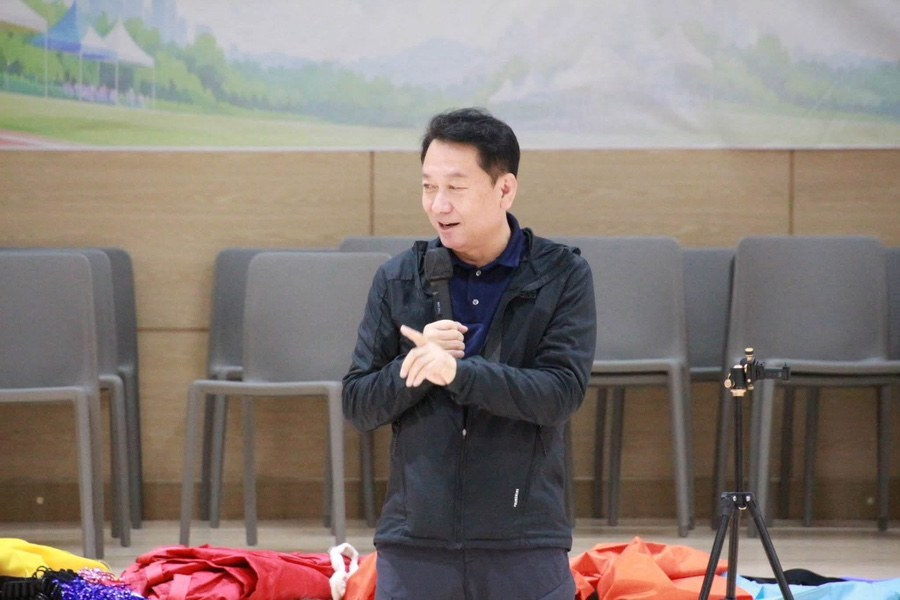

66호 | 2026년 10월 27일 발행
📌 이번 호 주요 목차
 우리동네 국회의원 이광재
우리동네 국회의원 이광재
📝 현장일지
이광재의원, 주간 이광재 "감일 능안천·벌말천에 11월부터 물이 흐릅니다"
• 기후에너지환경부와 여러 차례 협의 끝에 감일 능안천·벌말천 11월부터 용수 공급 확정
• 감일 수도부지에 19억 원 규모 '피크닉 파크' 추진, 특별교부세 확보에 주력
• 위례신사선 감일 연장, 제5차 광역교통시행계획 반영 위해 국토교통부와 협의
• 월세 부담 큰 지역아동센터 지원, 하남시와 조례 근거 마련 방안 모색
• 미사경정장 주차요금 1,000원→500원 인하 협의, 국감 마치고 내년 예산 심사 돌입
• 감일 수도부지에 19억 원 규모 '피크닉 파크' 추진, 특별교부세 확보에 주력
• 위례신사선 감일 연장, 제5차 광역교통시행계획 반영 위해 국토교통부와 협의
• 월세 부담 큰 지역아동센터 지원, 하남시와 조례 근거 마련 방안 모색
• 미사경정장 주차요금 1,000원→500원 인하 협의, 국감 마치고 내년 예산 심사 돌입
📌 출처: 이광재 공식 네이버 블로그
📝 현장일지
이광재의원 "아이들이 잘 자라고, 청년들이 꿈꾸는 하남 만들겠습니다"
• 국감 마친 주말, 창우초 하남시 지역아동센터 연합체육대회 찾아 아이들 응원
• 창우초 낡은 복도창 교체 특별교부금 3억 9,300만 원 확보
• 미사호수공원 제16회 '레알축제'에서 청년들이 준비한 공연·체험행사 함께해
• 하남시 초등학교 학부모폴리스연합단 만나 아이들 안전 지킴이에 감사 전해
• 도시가 크는 만큼 교육·돌봄과 청년 도전 기회도 늘도록 꼼꼼히 챙길 계획
• 창우초 낡은 복도창 교체 특별교부금 3억 9,300만 원 확보
• 미사호수공원 제16회 '레알축제'에서 청년들이 준비한 공연·체험행사 함께해
• 하남시 초등학교 학부모폴리스연합단 만나 아이들 안전 지킴이에 감사 전해
• 도시가 크는 만큼 교육·돌봄과 청년 도전 기회도 늘도록 꼼꼼히 챙길 계획

📌 출처: 이광재 공식 네이버 블로그
📰 언론보도
[기호일보] 이광재의원 "아이들이 매일 체감하는 교육환경 개선이 가장 시급"… 책걸상 교체·위례·감일 과밀학급 해소 약속
이광재 국회 예산결산특별위원장(민주·하남시갑)이 26일 정근식 서울시교육감을 만나 낡은 학교 책걸상 교체를 위한 지방교육재정교부금 개편과 하남 위례·감일지구 과밀학급 해소를 논의했습니다. 행정구역이 하남·송파·성남으로 나뉜 위례신도시 문제를 두고는 송파구와의 '한시적 공동학군' 운영과 가용부지를 활용한 학교 신설 대안을 전달하고 실무 협의체 구성을 제안했습니다. 이 위원장은 내년도 교육예산 심사에서 아이들의 교육환경을 바꿀 예산의 물꼬를 트겠다고 약속했습니다.
📌 출처: 기호일보 (이홍재 기자)
📰 하남 지역 주요 뉴스
🤝 복지/마을공동체
미사강변 리슈빌 4단지, 미사강변종합사회복지관과 '마을공동체 활성화' 업무협약
미사강변 리슈빌 4단지 관리사무소(소장 박태연)와 하남시미사강변종합사회복지관(관장 조혜연)이 지난 21일 주민 복리 증진과 마을공동체 활성화를 위한 업무협약을 맺었습니다. 두 기관은 사회복지서비스 연계·지원과 주민 간 소통·교류 활성화에 함께 나서, 입주민의 복지서비스 접근성을 높이고 주민이 스스로 참여하는 환경을 만들 계획입니다. 박 소장은 "이웃 간 교류가 더 활발해지는 계기가 되길 바란다"고, 조 관장은 "주민이 함께 성장하는 지역사회를 위해 계속 협력하겠다"고 밝혔습니다.
📌 출처: 하남신문
🚸 통학/보행
하남 한홀중 통학길 편해진다… 망월천에 길이 30.7m 보행교 놓는다
하남시가 하천에 가로막혀 통학이 불편했던 한홀중학교 주변 망월천에 보행자 전용 다리(인도교)를 놓는다고 23일 밝혔습니다. 새 다리는 폭 6.5m, 길이 30.7m 규모로 풍산동 e편한세상미사 앞 삼거리와 한홀중학교를 잇습니다. 시는 내년 상반기 착공해 같은 해 하반기 완공할 계획입니다. 개통되면 하천을 멀리 돌아 등·하교하던 학생들의 통학 시간이 줄고 주민 이동도 편해질 전망입니다. 시는 미사문화의거리 인근 망월천에도 보행교 설치를 추진하고 있습니다.
📌 출처: 연합뉴스 (이우성 기자)
💬 하남 맘카페 HOT 이슈
이번 주 하남 지역 맘카페(미사맘스클럽, 정다운 감일맘, 하강맘, 교산살래 등)에서 많이 오르내린 HOT 이슈 TOP 3입니다.
1️⃣ [건강] "내일 독감 맞을 수 있는 병원 있을까요?"… 찬바람에 독감 접종 문의 줄이어, 올해 하남 중·고생은 접종비 지원 대상
현황: 아침저녁 기온이 뚝 떨어지면서 독감 예방접종 글이 맘카페마다 이어지고 있습니다. 미사맘스클럽에는 고등학생 자녀 일정에 맞춰 접종할 수 있는 병원을 묻는 글이, 정다운 감일맘에는 작년보다 값이 많이 올랐다며 성인 독감주사를 저렴하게 맞을 곳을 찾는 글이 올라왔습니다. 아이품애 등에서는 올해 3가 백신을 맞고 왔다는 후기와 병원별 접종비 정보가 공유됐습니다. 슬기로운 위례생활에는 경기도교육청의 중·고등학생 인플루엔자 예방접종 지원이 올해 하남시 거주 중·고생에게 새로 적용된다며, 의료기관에 내야 하는 서류를 미리 챙기라는 안내 글이 올라와 관심을 모았습니다.
💡 주민 포인트: 어린이·임신부·65세 이상 어르신 등 국가 무료접종 대상자는 질병관리청 '예방접종도우미'(nip.kdca.go.kr)에서 가까운 지정 의료기관을 찾을 수 있습니다. 중·고생 지원은 서류가 제대로 작성되지 않으면 접종만 하고 지원을 못 받을 수 있으니, 학교 안내문을 확인하고 병원에 미리 문의하세요.
💬 주민 반응: 병원마다 접종비가 달라 발품을 판다는 목소리와 함께, 덜 아프게 놔주는 병원·대기가 짧은 병원 정보를 서로 나누는 분위기입니다.
📌 출처: 네이버 카페 (미사강변도시 미사맘스클럽, 정다운 감일맘, 아이품애, 슬기로운 위례생활)
2️⃣ [나들이] "이번 주말 행사 있을까요?"… 레알축제 후기·레스티아 야시장·핑크뮬리 이어 31일엔 미사 반려동물 문화축제
현황: 가을 행사가 몰린 주말마다 아이와 갈 곳을 묻는 글이 많았습니다. 지난 24일 미사호수공원 잔디광장에서 열린 제16회 '레알축제'에는 초·중·고 학생들이 꾸린 체험부스가 차려졌는데, 미사맘스클럽에는 날씨가 흐리고 다른 행사도 겹쳐 작년보다 한산했지만 윤슬중·하남고 부스는 오래 기다려서라도 참여했다는 후기가 올라왔습니다. 미사 레스티아 앞 야시장·플리마켓에 에어바운스와 회전그네 같은 놀이기구가 들어와 아이들이 좋아했다는 글, 미사경정공원 핑크뮬리가 한창이라는 소식, 나무고아원 단풍 시기를 묻는 글도 이어졌습니다. 클럽감일맘에는 31일 미사에서 열리는 하남시 반려동물 문화축제 안내가 공유됐습니다.
💡 주민 포인트: 2026 하남시 반려동물 문화축제는 10월 31일(토) 11:00~17:00 미사아일랜드 펫존(미사동로40번길 310)에서 열리며, 사전신청은 10월 28일(수)까지(선착순 마감 가능)입니다. 요즘 미사호수공원에 날파리가 많다는 글도 있으니 산책할 땐 긴소매를 챙기세요.
💬 주민 반응: 멀리 가지 않아도 동네에서 즐길 거리가 많다는 반응과 함께, 행사 날짜가 겹쳐 어디로 갈지 고민된다는 글이 많았습니다.
📌 출처: 네이버 카페 (미사강변도시 미사맘스클럽, 하강맘, 클럽감일맘, 슬기로운 위례생활)
3️⃣ [교통·신도시] "주말 오전 버스 24분 기다렸어요"… 교산 본착공 소식 속 출퇴근·버스 불편 호소, 오금역 마을버스 요청도
현황: 교산신도시와 교통 이야기도 꾸준했습니다. 교산살래 카페에는 교산 신도시가 연내 첫 1,100가구 규모 민간참여 공공주택 본착공에 들어간다는 기사가 공유됐고, 하남맘 모여라에는 교산 청약 일정을 묻는 글이 올라왔습니다. 미사강변2차푸르지오 입주민 모임에는 교산·황산을 거치는 GTX-D 노선이 11월 판가름 난다는 기사가 공유됐습니다. 생활 속 교통 불편도 이어져, 교산우리동네 카페에는 주말 오전 미사역 가는 버스를 24분 기다려야 했다는 글과 비 오는 월요일 아침 7시 반에 하남시청역 환승주차장이 이미 꽉 찼다는 글이 올라왔습니다. 감일스윗시티 카페에는 오금역을 오가는 마을버스가 생겼으면 좋겠다는 제안이 나왔습니다.
💡 주민 포인트: 버스 배차나 노선 불편, 신설 요청은 하남시 콜센터(031-790-6114)나 하남시 누리집 민원 창구로 구체적인 정류장·시간대를 적어 알리면 노선 검토 때 참고 자료가 됩니다.
💬 주민 반응: 교산 착공 소식에 기대가 크면서도, 입주에 앞서 교통부터 갖춰져야 한다는 목소리가 많습니다.
📌 출처: 네이버 카페 (교산살래, 하남맘 모여라, 미사강변2차푸르지오 입주민 모임, 교산우리동네, 좋은예감 일등도시 감일스윗시티)
🎭 ALL IN 하남라이프
2026년 10월 27일 기준 한눈에 보는 하남시 최신 문화·행사·교육 안내 가이드
📚 접수 10.23(금)~10.29(목) | 하남시 평생학습포털 · 동네 학습공간 15곳
[평생학습] 2026년 11월 '별자리 학습공간' 프로그램 수강생 모집 (하남시 평생교육과)
"다가오는 11월, 동네에서 배움으로 일상을 채워보세요"
경기도형 평생학습도시 교육캠퍼스 조성사업으로, 동네 교회·공방·카페·학원 등 15곳의 '별자리 학습공간'에서 11월 한 달 동안 강좌가 열립니다.
🤟 수어: 생활 속 수어 배우기 (함께지어져가는교회, 11.2~23 월 19~21시) · 수어 첫걸음 (감일하남교회, 11.4~25 수 10~12시)
🍰 요리·베이킹: 커피 내리기 (5301%) · 베이킹 (아워키친) · 떡 만들기 (감온당) · 아기숟가락 이유식 (생수의강교회) · 디저트 (디자이너디저트, 금 저녁)
🌸 공예: 꽃 (플레온느, 화 저녁) · 향 (may.23 공방) · 오색자개 (공방시와저) · 겨울 테이블웨어 (무드세라) · 플라워 (하남시장애인복지관)
💃 몸 움직이기: 자세와 모델 워킹 (덕풍청소년문화의집) · 브레이킹댄스 (레디투플레이댄스학원, 일 14~16시) · 셔플댄스 (하남시평생학습관)
✅ 신청: 하남시 평생학습포털에서 접수 · 일부 강좌는 재료비 별도 (포스터 ✱ 표시)
☎️ 문의: 하남시 평생교육과 031-790-6043
경기도형 평생학습도시 교육캠퍼스 조성사업으로, 동네 교회·공방·카페·학원 등 15곳의 '별자리 학습공간'에서 11월 한 달 동안 강좌가 열립니다.
🤟 수어: 생활 속 수어 배우기 (함께지어져가는교회, 11.2~23 월 19~21시) · 수어 첫걸음 (감일하남교회, 11.4~25 수 10~12시)
🍰 요리·베이킹: 커피 내리기 (5301%) · 베이킹 (아워키친) · 떡 만들기 (감온당) · 아기숟가락 이유식 (생수의강교회) · 디저트 (디자이너디저트, 금 저녁)
🌸 공예: 꽃 (플레온느, 화 저녁) · 향 (may.23 공방) · 오색자개 (공방시와저) · 겨울 테이블웨어 (무드세라) · 플라워 (하남시장애인복지관)
💃 몸 움직이기: 자세와 모델 워킹 (덕풍청소년문화의집) · 브레이킹댄스 (레디투플레이댄스학원, 일 14~16시) · 셔플댄스 (하남시평생학습관)
✅ 신청: 하남시 평생학습포털에서 접수 · 일부 강좌는 재료비 별도 (포스터 ✱ 표시)
☎️ 문의: 하남시 평생교육과 031-790-6043
📌 출처: 하남시 평생학습포털 (하남시 평생교육과)
💻 12월까지 | 하남시청 정보화교육장 등 5곳 · 무료
[디지털교육] 2026년 하남시 AI디지털배움터 — AI 활용·스마트폰·컴퓨터 기초 무료 교육
"AI, 이제 가까운 교육장에서 무료로 배워보세요"
생성형 AI 활용부터 스마트폰·컴퓨터 기초까지, 하남시민 누구나 가까운 교육장에서 무료로 배울 수 있는 디지털 교육입니다.
🗓 기간: 2026년 7월~12월 (교육장별 일정에 따라 순차 개설)
👥 대상: 하남시민
📚 내용: AI 활용, 컴퓨터 기초, 스마트폰 활용 등
📍 교육장: 하남시청 별관 2층 정보화교육장 · 미사강변종합사회복지관 · 디지털도서관 · 감일동 행정복지센터 · 위례동 행정복지센터
💰 수강료: 무료 (교재는 개별 구입)
✅ 신청: 디지털배움터 홈페이지(디지털배움터.kr) → 배움터교육 → 교육과정 → 교육찾기/신청하기
☎️ 문의: AI디지털배움터 콜센터 1600-5993
생성형 AI 활용부터 스마트폰·컴퓨터 기초까지, 하남시민 누구나 가까운 교육장에서 무료로 배울 수 있는 디지털 교육입니다.
🗓 기간: 2026년 7월~12월 (교육장별 일정에 따라 순차 개설)
👥 대상: 하남시민
📚 내용: AI 활용, 컴퓨터 기초, 스마트폰 활용 등
📍 교육장: 하남시청 별관 2층 정보화교육장 · 미사강변종합사회복지관 · 디지털도서관 · 감일동 행정복지센터 · 위례동 행정복지센터
💰 수강료: 무료 (교재는 개별 구입)
✅ 신청: 디지털배움터 홈페이지(디지털배움터.kr) → 배움터교육 → 교육과정 → 교육찾기/신청하기
☎️ 문의: AI디지털배움터 콜센터 1600-5993
📌 출처: 하남시 (정보통신과)
🏛️ 공공기관 소식지
2026년 10월 27일 기준 하남시 공공기관 주요 공고·신청 안내입니다.
💼 하남도시공사 | 공고 게재 10.23~11.11 · 기간제·단시간근로자
2026년 제5회 하남도시공사 기간제 계약직 및 단시간근로자 직원 채용
"우리 동네 공기업에서 일할 기회"
하남도시공사가 올해 다섯 번째 기간제 계약직·단시간근로자 공개 채용을 진행합니다. 모집 분야·인원·자격과 접수 방법은 공고문에 담겨 있으니 지원 전 꼭 확인하세요.
📄 공고: 하남시 공고 제2026-1909호 (공고문 hwpx 첨부)
🗓 게재기간: 2026.10.23 ~ 11.11
☎️ 문의: 채용콜센터 070-5223-1887 · 하남도시공사 인사관리부 031-790-9561
하남도시공사가 올해 다섯 번째 기간제 계약직·단시간근로자 공개 채용을 진행합니다. 모집 분야·인원·자격과 접수 방법은 공고문에 담겨 있으니 지원 전 꼭 확인하세요.
📄 공고: 하남시 공고 제2026-1909호 (공고문 hwpx 첨부)
🗓 게재기간: 2026.10.23 ~ 11.11
☎️ 문의: 채용콜센터 070-5223-1887 · 하남도시공사 인사관리부 031-790-9561
📌 출처: 하남시 (기획조정과) · 하남도시공사
⚖️ 하남시 | 4개 동 행정복지센터 순회 · 1인 월 1회 예약
하남시 무료법률상담 — 민사·형사·가사 고민, 가까운 동 행정복지센터에서
"법률 고민, 변호사·법무사에게 무료로 물어보세요"
민사·형사·가사 등 법률문제를 겪는 하남시민이나 하남시 안 사업자는 동 행정복지센터를 돌며 열리는 무료 법률상담을 받을 수 있습니다. 상담은 20분 단위로 예약합니다.
🗓 11월 일정: 11.4(수) 미사3동 14~16시 · 11.9(월) 감일동 15~17시 · 11.13(금) 덕풍3동 10~12시 · 11.23(월) 미사2동 10~12시
✅ 예약: 하남시 누리집 '무료법률상담' 예약 (1인 월 1회) · 디지털 취약계층은 전화 예약 031-790-6126
⚠️ 참고: 10월 27일 현재 11월 상담 시간은 모두 예약이 찬 상태입니다. 취소분이 생길 수 있으니 예약 페이지를 수시로 확인하세요.
💡 알아두세요: 상담 내용은 변호사·법무사 개인의 법률적 견해로, 하남시의 공식 의견이 아닙니다.
민사·형사·가사 등 법률문제를 겪는 하남시민이나 하남시 안 사업자는 동 행정복지센터를 돌며 열리는 무료 법률상담을 받을 수 있습니다. 상담은 20분 단위로 예약합니다.
🗓 11월 일정: 11.4(수) 미사3동 14~16시 · 11.9(월) 감일동 15~17시 · 11.13(금) 덕풍3동 10~12시 · 11.23(월) 미사2동 10~12시
✅ 예약: 하남시 누리집 '무료법률상담' 예약 (1인 월 1회) · 디지털 취약계층은 전화 예약 031-790-6126
⚠️ 참고: 10월 27일 현재 11월 상담 시간은 모두 예약이 찬 상태입니다. 취소분이 생길 수 있으니 예약 페이지를 수시로 확인하세요.
💡 알아두세요: 상담 내용은 변호사·법무사 개인의 법률적 견해로, 하남시의 공식 의견이 아닙니다.
📌 출처: 하남시 (법무감사관)
© 2026 우리동네 진짜일꾼 이광재